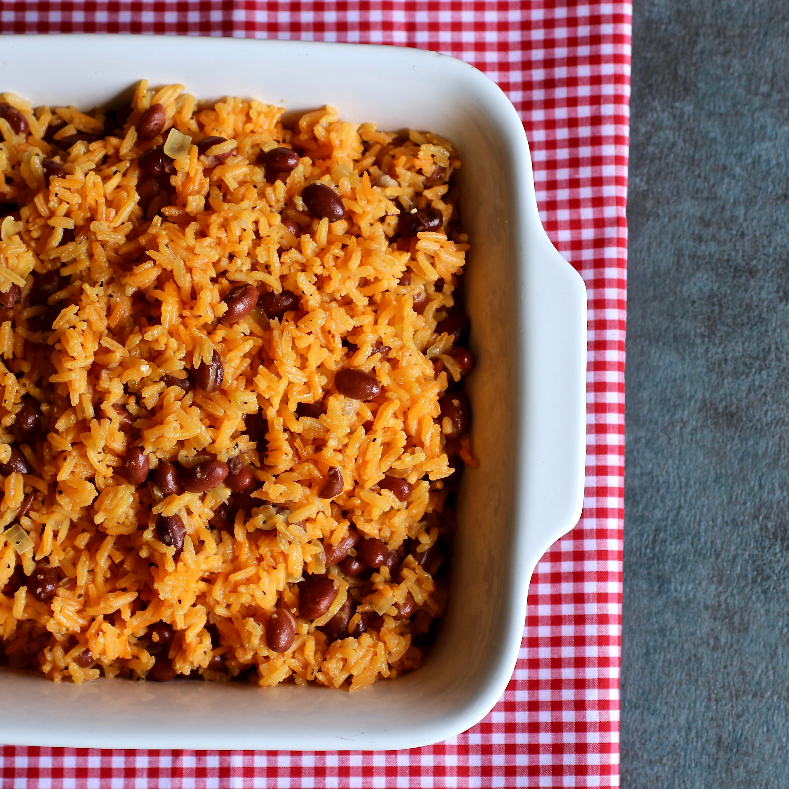

Spanish Rice

Flavorful Spanish Rice and Beans
Very flavorful, quick, and simple rice and beans with a Mexican twist.
Ingredients
- 2 1/4 cups of water
- 1 cup uncooked white rice
- 1 tablespoon olive oil
- 1 sweet onion, chopped
- 1 (1.41 ounce) package sazon seasoning
- 1 1/2 teaspoons adobo seasoning
- 1/2 teaspoon minced garlic
- 1/2 teaspoon ground black pepper
- 1 (15 ounce) can red beans, drained
- 1 (2,25 ounce) can pitted green olives (Optional)
Steps
- Bring water, rice, and olive oil to a boil in a saucepan over high heat.
- Mix in onion, sazon seasoning, adobo seasoning, garlic, and black pepper.
- Reduce heat to medium-low; cover and cook for 10 minutes.
- Add beans and olives and cook until liquid has been absorbed, about 10 minutes. Mix before serving